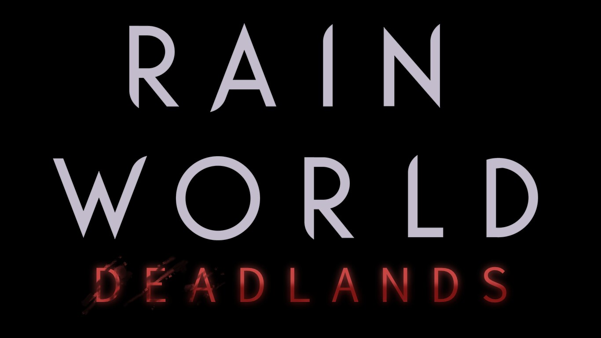
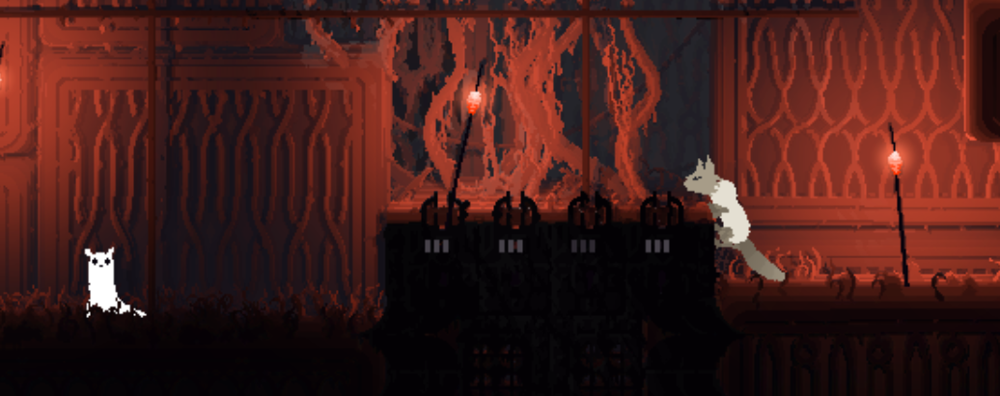
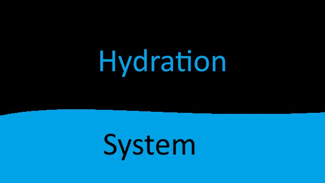
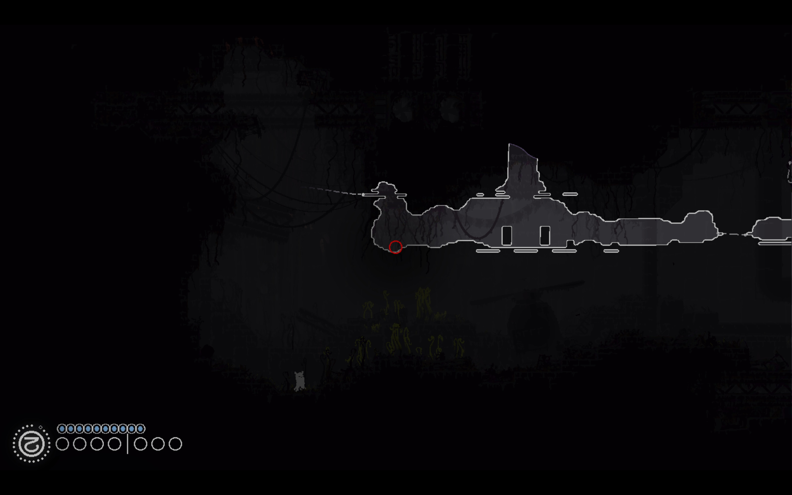
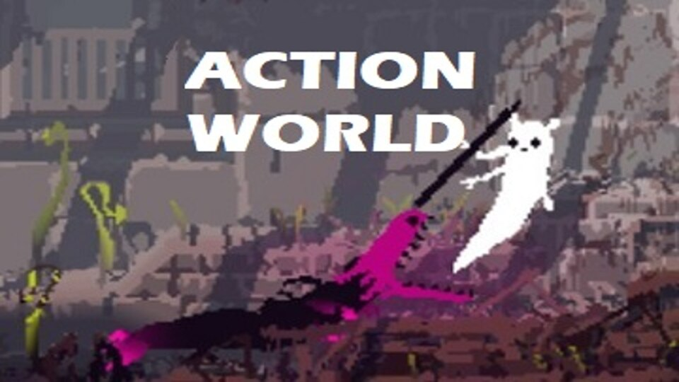
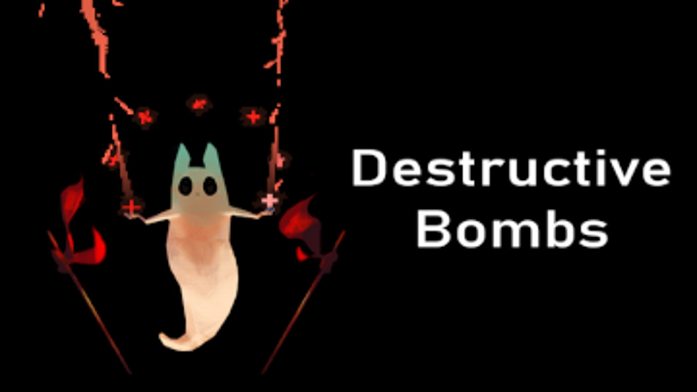
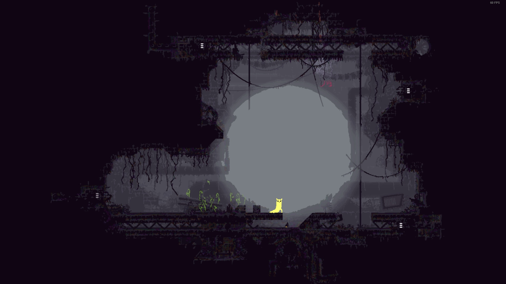
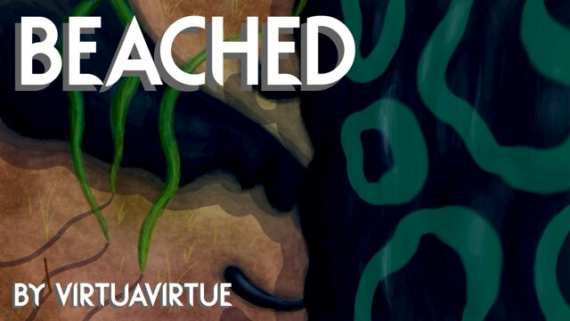
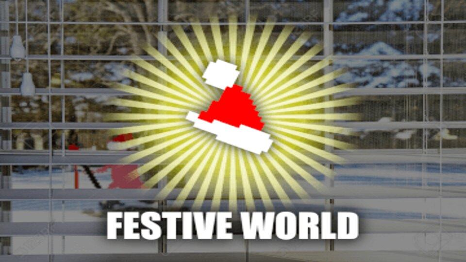

Rain World code commissions. C# / BepInEx. Discord: mills888 · GitHub · Steam Workshop
I've been making Rain World mods for a long time. I write only code, not art/sprites. If you have a slugcat, mechanic, or creature idea I'm able to build it.
Not taking: regions, art, sprites, sound. If your project needs those I can probably recommend you someone.
Source is on GitHub for most of it. Some of these are my own, some are other people's dead mods that I rewrote or ported for the current versions. It says which under each one.
Community project I started and run, based on a daszombes region concept. New slugcat (the Nomad), regions, creatures, mechanics. The Workshop build is the early Nomad release.

Commission work for someone else's slugcat project. So far: a variant/rewrite of the Hydration System, a large config layer, and a custom fox creature (below). This mod is still in progress. No public source code.

Custom fox creature, art by the client.
Thirst mechanic built for Deadlands and released standalone so other modders can use it. Adds a hydration bar, heat rooms and heat zones via DevTools, water source objects, food restores hydration, SlugBase per-character overrides, and a death timer with movement debuffs when you hit zero. This is close to what a "single mechanic" commission looks like.


Clear every room of enemies before you can move on. Has a Remix menu to pick which hostile creatures spawn in the hordes. Original code from Formal Lizard but required a complete rewrite.

Original by slime_cubed. Updated after it broke from the MSC expansion and have kept it working through Watcher since and added a remix menu.


Removes Gourmand's exhaustion. Small single-mechanic mod, source is public if you want to see how I write.
Other people's mods that had died. Most of these were rewrites rather than recompiles.


Outside Rain World I made a multiplayer mod for Gloomwood (Unity, BepInEx) which took about a month and shipped without much breaking, if that matters to you.
Before I start anything you get a written quote with an hours estimate. I will notify you before I hit my estimate if I should stop at the estimate or keep going and you will be given a new estimate. Changes to the plan after we agree on it get added separately.
Rough idea of what things cost:
| Fix / port a broken mod | usually 1-4 hrs $50+ |
| Single mechanic (stamina, a new item, HUD element) | 3-10 hrs, $100+ |
| Slugcat ability kit (several abilities + config) | 15-40 hrs, split into milestones $250+ |
| Creature behaviour / new creature | 10-40 hrs depending on what it does and usually around $400+ |
These are guesses and change massively depending on the feature.
| Turnaround | Depends entirely on the mechanic. Small fixes are usually days. At worst 1-2 months but that number is very variable. I will provide a deadline in the quote and tell you up front if busy. |
| Payment | Per milestone. First time working with me: 50% up front, 50% if you want to test it and/or before I hand over source. If I trust you or you're returning you just pay 50% before testing the DLL and the rest for the finished build and source code. Invoices are due within 30 days. |
| Payment methods | PayPal. |
| Refunds | If I haven't started, full refund of the deposit. If you cancel partway through a milestone, you pay for the hours done up to that point and get the unfinished code upon request. Finished or tested milestones aren't refundable. If something I delivered breaks on a game update or has a bug within 30 days I will fix it for free. |
| Revisions | Tuning and bug fixes on what we agreed to are included. New features are a new quote. |
| Who owns it | You. Once a milestone is paid the code is yours to publish, change, or keep private. I'd like credit as the programmer if it goes public but I won't fight you on it. |
| Queue | No Trello. Whatever I'm currently on is listed below and I update it by hand. |
Last updated Sept 2026